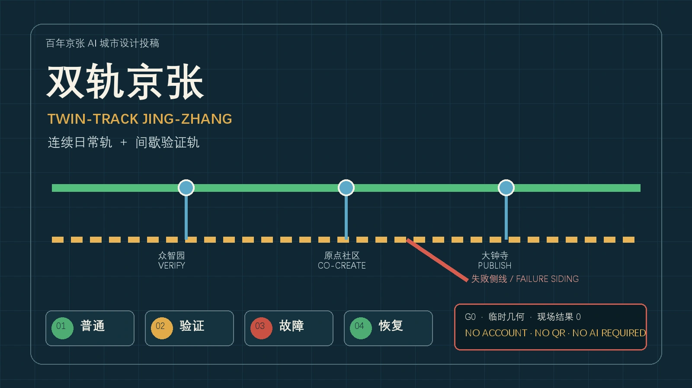
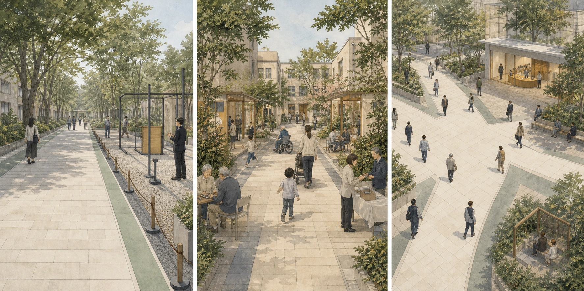
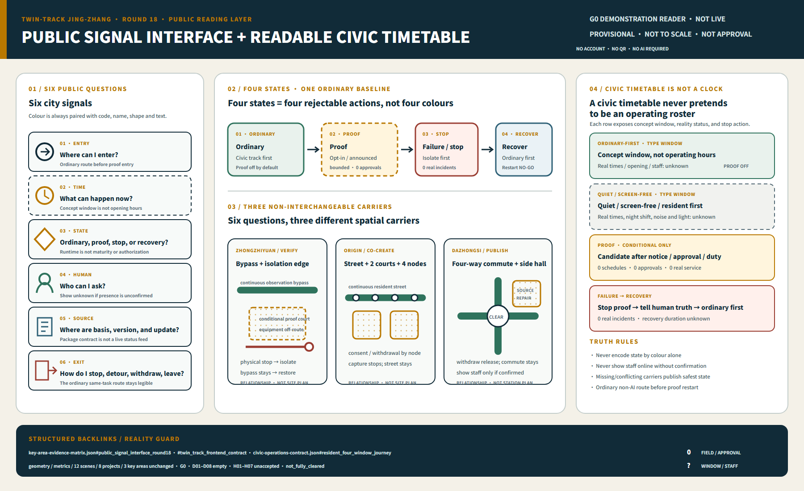
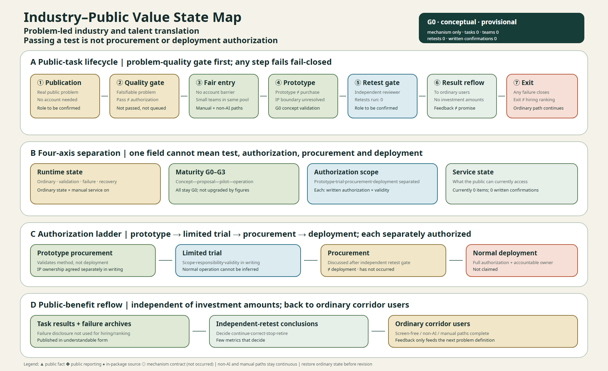
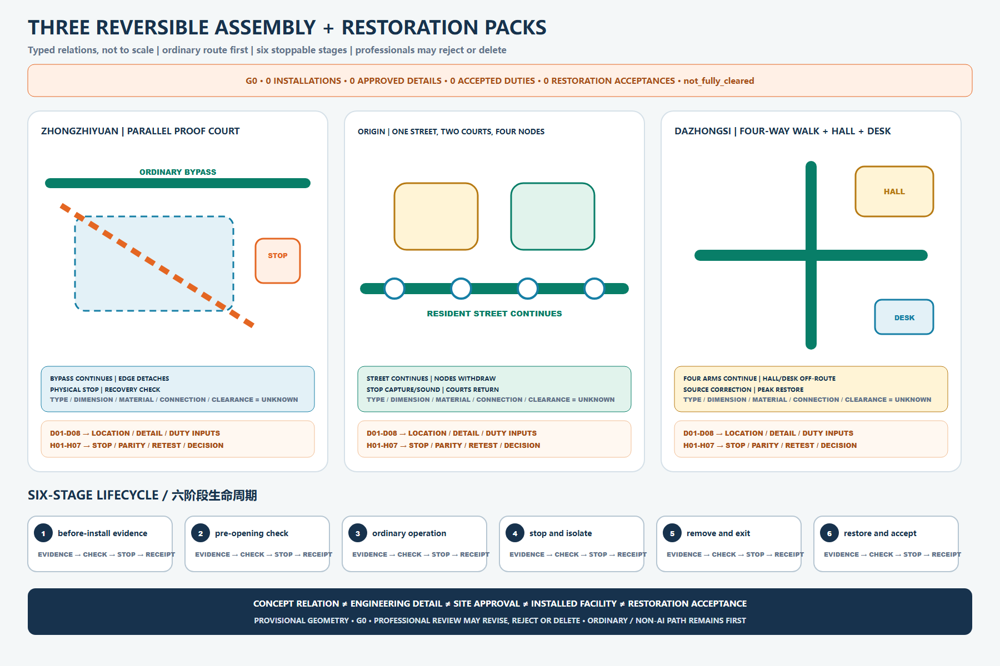
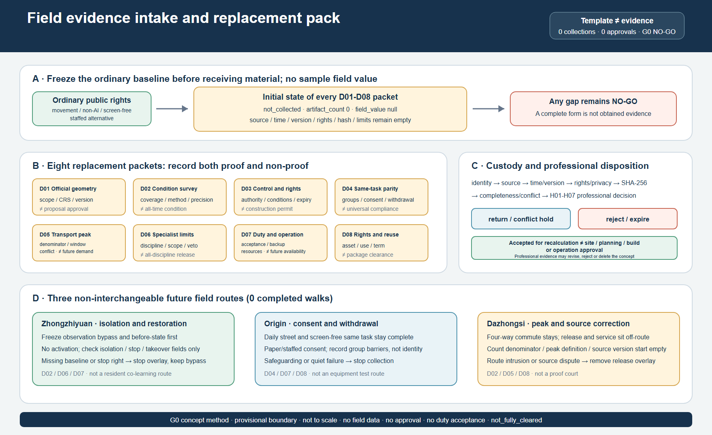

Read Figure 01: twin tracks, three prototypes, failure siding, six signals, and the provisional boundary.
30-SECOND ENTRY · G0 · THREE SEPARATE FRAMES · NOT TO SCALE
Twin-Track Jing-Zhang: ordinary life stays continuous; proof appears beside it

One concept: the continuous ordinary track keeps the ordinary task complete, while the intermittent proof track is a voluntary, bounded and stoppable side overlay: Zhongzhiyuan VERIFY, Origin Community CO-CREATE, Dazhongsi PUBLISH. One boundary: the proposal remains G0 with provisional geometry; clarity is not site precision.
Follow the six front-stage sections: cover—ordinary life—four-state journey—three places—public signals—professional handoff.
Open the evidence library and audit D01–D08, H01–H07, rights, sources, and recalculation triggers.
Open the three-frame site evidence and provisional-boundary note
On small screens, scroll within the figure; the three cards below provide an equivalent text reading.

Published reports generate field questions only; they prove no as-built condition, access, capacity, rights, or exact alignment.
PROV-SITE-001 and the three PROV-KEY objects support concept organization and intake checks only.
Task relay, adjacent proof, staffed handover, stop, restoration, and exit only; no coordinate, distance, or build sequence.
Unresolved; do not silently redraw: the existing OSM background check records 0% overlap and about 412.5 metres separation, but cannot determine an official boundary;
PROV-KEY-003 remains unanchored to Dazhongsi station, a road, parcel, or building. This round does not shift geometry. A further maintainer background record (2026-08-14) reads the four announcement-named street centrelines and finds the registered boundary edge 533–898 m to the east (mean about 667 m); it is background only — no reverse upgrade and no scoring block. Structured contract: JZ-SITE-READING-R17.3-MINUTE READING · ORDINARY TASK FIRST · SYNTHETIC CONCEPT
Complete the same ordinary task without registration, scanning or AI

Complete non-AI path: physical wayfinding, screen-free information, a continuous accessibility-intent route, paper or spoken explanation, staffed handoff and legible exit work independently first.
Three places are not copies: Zhongzhiyuan protects the bypass, Origin protects resident daily life and withdrawal, and Dazhongsi protects commuting and source correction.
Generation, rights and machine evidence
Bilingual long description and generation/rights disclosure · ordinary-life media register · same-task non-AI contract
JURY MOTION · USER STARTED · 48 S · SILENT · G0
One ordinary task: ordinary → proof → failure → recovery
The same continuous ordinary track remains visible while only the side proof layer appears, stops and isolates, then becomes a recovery candidate. Each state lasts 12 seconds and the sequence totals 48 seconds as interface pacing, not real recovery time. It never autoplays and starts only from the button.
Ordinary
Civic track, screen-free information, and staffed service are available; proof is off.
Proof
Voluntary, announced, bounded; the same-task non-AI control remains beside it.
Failure / stop
Automation stops and staff take over; people bypass, ask, or leave.
Recovery
Restore the ordinary route and service first; otherwise stay G0 or retire.
Paused at 01 Ordinary
Static alternative: the four cards above are the complete transcript and remain readable without JavaScript. With reduced motion enabled, the control advances one discrete state at a time. Real incidents, recovery duration, rosters, acceptance, and GO decisions remain 0 or unknown. Structured backlink: jury-motion-journey.json.
ONE PUBLIC BASELINE · THREE DIFFERENT SPATIAL COMPOSITIONS
Three non-interchangeable switchyards
Parallel bands, equipment isolation edge and physical stop; the failure object is the side proof court.
One street, two courts and four individually withdrawable nodes; the failure object is one optional node.
Four-way commuter cross, off-route release hall and staffed desk; the failure object is the service siding.
On mobile, scroll only inside the labelled figure containers; the three texts above provide an equivalent spatial reading.


Open the full three-place comparison and limits
Read the ordinary task, staffed handoff, failure object, restoration object and missing-input comparison. The figures prove no existing building, station anchor, facility, approval or built outcome.
ROUND 18 · G0 DEMONSTRATION · NOT A LIVE SYSTEM
Public Signal Interface: three carriers × four states × six questions
The same entry, time, state, human, source and exit signals take on different spatial duties at the three switchyards. Choose a place and state to locate its reading. The enhancement only reads the complete static table below: it makes no network request, collects no data, calculates no field result, and never turns a concept timetable into a confirmed roster.

G0 concept state · Zhongzhiyuan · OrdinaryConcept carrier: continuous observation bypass + closed isolated proof edgeNot a site record · facility, exact location, staffed presence and operation are not built or confirmed
Entry signal
In a future concept implementation, the primary path would enter the continuous observation bypass and the proof-court entrance would remain physically closed; neither is claimed as existing.
Time signal
The concept rule makes ordinary use the default; real opening windows, rosters and quiet parameters remain unknown.
State signal
Conceptual ordinary state; proof overlay off; every scene remains G0.
Human signal
The concept defines a takeover-point type; confirmed staff, shifts and accountable operators are all 0.
Source signal
Paper explanation backlinks existing evidence; field verification and approvals are 0.
Exit signal
Leave along the same screen-free bypass without an account, QR scan or AI.
Reality reading: staffed presence 0 · confirmed windows 0 · field tests 0 · approvals 0 · GO 0 · G0 · provisional geometry · rights not_fully_cleared · concept display is not live site status
Complete static alternative: all 12 place × state signal contracts
| Place | Operating state | Concept carrier | Entry | Time | State signal | Human | Source | Exit |
|---|---|---|---|---|---|---|---|---|
| Zhongzhiyuan | 01 Ordinary | Continuous observation bypass + closed isolated proof edge | In a future concept implementation, the primary path would enter the continuous observation bypass and the proof-court entrance would remain physically closed; neither is claimed as existing. | The concept rule makes ordinary use the default; real opening windows, rosters and quiet parameters remain unknown. | Conceptual ordinary state; proof overlay off; every scene remains G0. | The concept defines a takeover-point type; confirmed staff, shifts and accountable operators are all 0. | Paper explanation backlinks existing evidence; field verification and approvals are 0. | A future implementation would allow exit along the same screen-free bypass without an account, QR scan or AI. |
| Zhongzhiyuan | 02 Proof | Continuous bypass + side-positioned isolated proof edge | The conceptual proof state would keep the ordinary bypass and allow entry only through a voluntary side gate; real entrances are 0. | A window requires notice, approval and an accountable person; confirmed windows are 0. | Proof candidate; equipment and people are bounded; maturity remains G0. | Staffed takeover must be reachable before physical stop; confirmed staff and rosters are 0. | Show the test object, method, source and stop condition; real tests are 0. | The concept rule requires return to the bypass or exit at any time; refusal cannot affect the ordinary task. |
| Zhongzhiyuan | 03 Failure | Continuous bypass + isolated failure siding | If a future failure occurs, the concept rule would physically close and isolate the proof entrance without blocking the continuous bypass; real failures are 0. | Stop on trigger; real failure events are 0 and recovery duration is unknown. | Failure / stop; the interface must not imply that service continues. | Show the takeover-duty type; confirmed accountable operators remain 0. | Freeze the failure record and source version; real records are 0. | The concept rule keeps the non-AI bypass and allows questions, appeal or exit. |
| Zhongzhiyuan | 04 Recovery | Recovery rule: bypass first + proof edge stays closed | A future recovery would restore the continuous bypass first and keep the proof entrance closed; real restoration acceptances are 0. | Only complete restoration and independent retest may create a candidate; real decisions are 0. | Recovery candidate; any missing item means NO-GO, not automatic proof. | Future duty roles sign restoration evidence; sign-off is not site approval. | Restoration evidence, maintenance closure and independent retest remain pending. | The concept rule requires complete ordinary access before proof reopening is discussed. |
| Origin Community | 01 Ordinary | One daily street + two courts + four closed screen-free nodes | In a future concept implementation, one daily street would stay continuous and all four nodes could remain screen-free and off; existing layout and locations are unknown. | Resident daily life and quiet take priority; real opening and service windows are unknown. | Conceptual ordinary state; each node may close without affecting the street or two courts. | Paper, oral and staffed interface types are defined; confirmed staff are 0. | Problem source and consent boundaries are readable; real resident submissions are 0. | A future implementation would allow exit along the same street or either court without registration or scanning. |
| Origin Community | 02 Proof | Continuous daily street + one voluntary proof node | The conceptual proof state would activate only one side node and never occupy the daily street or two courts; real nodes are 0. | Notice, resident consent and withdrawal precede a window; current windows are 0. | Local proof; other nodes and resident daily life continue. | Staff explain paper or oral consent and withdrawal; confirmed staff are 0. | State source, purpose and no-collection default; real inputs are 0. | The concept rule requires immediate, penalty-free node withdrawal and return to the daily street. |
| Origin Community | 03 Failure | Failure rule: continuous street and courts + withdrawn single node | If a future node fails, the concept rule would isolate only that node while keeping the others, street and both courts available; real failures are 0. | Stop on trigger; real node-failure events are 0. | Failure belongs to the selected node, not to the community as a whole. | Keep staffed explanation, correction and appeal interfaces; confirmed staff are 0. | Cause, affected scope and records await a real event. | The concept rule returns a person to resident daily life after leaving the node; withdrawal remains valid. |
| Origin Community | 04 Recovery | Recovery rule: street and courts continue + node awaiting review | Ordinary use of the daily street and both courts continues throughout; future work clears and restores the affected node only, with real acceptances at 0. | Resident confirmation, node restoration and independent review precede candidacy; real acceptances are 0. | Recover only the affected node; otherwise keep it closed or retire it. | Future resident, maintenance and review roles sign separately and cannot replace one another. | Node-restoration receipt, consent status and review evidence remain pending. | The concept rule preserves withdrawal; the node may remain closed and enter retirement. |
| Dazhongsi | 01 Ordinary | Continuous four-way commute + closed off-route hall and desk | In a future concept implementation, four-way walking would stay direct and the hall and desk could only sit off the commuter route; exact anchors are unknown. | Commuting and quiet take priority; real timetable, shifts and staff remain unknown. | Conceptual ordinary state; publication and proof overlays are off; maturity remains G0. | A dual-entry staffed desk is a service type; confirmed location and staff are 0. | A future physical board would mark source status unknown and claim no published result. | The concept rule keeps all four directions available without a service detour. |
| Dazhongsi | 02 Proof | Continuous four-way commute + off-route release / service interface | The conceptual proof state would leave commuting unchanged and allow only a voluntary turn into an off-route hall-and-desk candidate; real facilities are 0. | Candidate only in announced and approved windows; real windows are 0. | Release / service candidate; readable files do not advance G0. | The desk corrects source and queue issues; confirmed staff are 0. | Show version, scope, limits and backlinks; real releases are 0. | The concept rule allows return to the nearest commuter direction or exit at any time. |
| Dazhongsi | 03 Failure | Failure rule: four-way commute + closed service siding | If a future failure occurs, the concept rule would close only the hall, desk and service siding, never the four-way walking crossing; real incidents are 0. | Stop on trigger; real incidents, congestion or source-error events are 0. | Failure affects only the side overlay and does not label commuting interrupted. | A future staffed desk receives correction and appeal; current staffed presence is 0. | A future interface must post a correction notice and freeze the version; never rewrite silently. | The concept rule keeps four-way paths open so the public can bypass the hall and leave. |
| Dazhongsi | 04 Recovery | Recovery rule: commute checked first + hall and desk awaiting review | A future recovery would verify four-way walking first, then let the hall and desk become candidates; real acceptances are 0. | Corrected sources, access, queue and restoration must close first; real closures are 0. | Recovery / NO-GO; incomplete closure cannot republish. | Future release, service, maintenance and review roles sign separately. | A future interface must show the corrected version, retest scope and every open limitation. | The concept rule requires commuter continuity and service-free exit before any reopening. |
Structured backlinks: key-area-evidence-matrix.json#public_signal_interface_round18 · civic-operations-contract.json · site-grounding-register.json#public_signal_interface_round18. This interface only makes inherited contracts readable; it adds no scene, project, geometry, facility, roster, approval or real-world result.
Review Synthesis and Professional Handoff
Review convergence:
read one concept, three prototypes and one kernel; test the six taskbook duties against evidence; then hand D01–D08 real-world gaps to seven professional disciplines. Review convergence adds no brand, scene, project, geometry or maturity. Any material gap remains NO-GO.
Package navigation and review handoff index
Review locating for all 141 package paths lives in review-handoff-index.json: seven reading routes (30-second / 3-minute / 15-minute, the five-step accessible walk, 21 chapter units, the D01–D08/H01–H07 handoff and the eight-question cold read) plus a per-file registry with five statuses (current / historical snapshot / machine input / frozen / provisional), language pairs, round provenance and rights backlinks. The index only locates; it creates no evidence and changes no maturity or rights state.
| Reading route | Entry |
|---|---|
| 30 seconds: one concept and one boundary | proposal.md one-sentence judgement · cover and three-frame figure |
| 3 minutes: one complete non-AI ordinary journey | This page: ordinary life · four states · public signals |
| 15 minutes: per-object verification and evidence library | This page: professional handoff · five-step walk · index registry |
| D01–D08 / H01–H07 professional handoff | implementation-handoff-matrix.json · field-evidence-intake-contract.json · readiness-closure-contract.json |
| Eight-question cold read (editorial review only) | Front-stage prose + six front sections + A3/A0 (per-question entries in the index) |
Status labels: round15-baseline.json is a historical snapshot; t02-g0-g1-replay-fixtures.json is synthetic-replay machine input; all geometry stays provisional with frozen hashes; current counts live in the manifest and rights ledger.

Twin-track grammar, three non-interchangeable prototypes, JZ-AIOS, four state axes, seven public rights and existing identifiers.
Provisional geometry, typed placeholders, role types and unverified source/content records; never alter an official or locked layer to preserve the concept.
Containment, area, route continuity, annotations, bilingual HTML/PDF, manifest and file-level rights digests together.
Professional conflict, same-task co-test, stop/recovery, independent retest and rights/authorization; a material gap remains NO-GO.
| Current reality counts | First professional action | Cannot be substituted |
|---|---|---|
| Authoritative replacement inputs 0 · accepted duties 0 · 99 slots submitted 0 · approvals 0 · field tests 0 · GO 0 | Select one existing project or scene and submit traceable real evidence through H01–H07; do not invent a scene ID to bypass a gap. | Concept diagram ≠ planning decision; green line ≠ access compliance; OSM ≠ boundary/transport; synthetic PASS ≠ field performance; event calendar ≠ duty/budget. |
Structured backlinks: visual/assets/implementation-handoff-matrix.json#review_synthesis, #agent_task_review_crosswalk, #official_data_replacement_register, and #professional_discipline_matrix.
Open the 15-minute backstage evidence: contracts, scenes, metrics, rights and sources
G0 · OFFLINE · NO ACCOUNT · NO AI REQUIRED
Back-stage five-step accessible evidence walk
This is the 15-minute evidence-trace entry, not the three-minute front-stage route. Read space—three prototypes—ordinary task—failure/recovery—professional NO-GO; interaction only routes attention, and presentation is not evidence.
STATIC FALLBACK: Without JavaScript, all five steps, limits and evidence backlinks remain expanded.
1 / 5 · G0
Separate three frames, then read the twin-track relationship
Why must the three information frames never become one site-truth map?
Published background is orientation only, the provisional container organizes intake only, and Twin-Track shows task relay only; they are never co-registered as site truth. The civic track works first, while proof appears only as a voluntary, announced, bounded and accountable side layer.
BOUNDARY: Separate the three frames, then read Twin-Track only inside the design-relationship frame. This G0 diagram proves no continuous occupation, built infrastructure, railway conclusion, station anchor or approval boundary.
2 / 5 · G0
Compare three non-interchangeable public-space prototypes
Why can the three sites not be copied mechanically?
Zhongzhiyuan isolates equipment in a parallel proof court with staffed takeover; Origin uses one street, two courts and four individually withdrawable screen-free nodes; Dazhongsi protects four-quadrant walking, one hall and one staffed desk for uninterrupted commuting.
BOUNDARY: Massing, components and locations are conceptual types; PROV-KEY-003 is not a Dazhongsi station-area plan. Dimensions, materials, connections, specialist checks, fire, railway-protection and municipal conclusions remain unknown.
3 / 5 · G0
Complete an ordinary task without AI first
Can the public complete the same task without registration, scanning or AI?
Yes. A screen-free entrance, continuous non-AI and accessibility-intent route, staffed station, paper or spoken explanation, and legible exit form the complete primary path. AI remains an optional side overlay.
BOUNDARY: This is a synthetic concept image, not a site photograph, confirmed viewpoint, accessibility result, operating evidence or staffing commitment.
4 / 5 · G0
Follow one ordinary–proof–failure–recovery journey
After failure, who stops, who takes over and what permits recovery?
Physical stop precedes interface messaging. Staffed takeover, isolation and a non-AI bypass preserve the ordinary task. Proof may become a candidate again only after restoration evidence, resident confirmation, maintenance closure and duty review exist.

BOUNDARY: A synthetic replay PASS proves only that file contracts can be replayed. Real incidents, recovery duration, rosters, site acceptance and GO decisions remain 0 or unknown.
5 / 5 · G0
Hand the concept to real inputs and professional NO-GO
What must be replaced, and who may reject the concept?
D01–D08 real inputs replace provisional geometry, typed placeholders and unverified sources. H01–H07 disciplines recalculate, verify duties, and may revise, reject or delete the concept. Major gaps, unclear rights or harm to ordinary rights retain NO-GO.
BOUNDARY: No file, drawing, machine check, PR review or merge creates a planning judgement, accepted professional duty, site approval, operating result or reuse licence.
D01–D08 · H01–H07 · 12 SCENES · 8 PROJECTS · 3 KEY AREAS · 99 CLOSURE SLOTS · G0 · not_fully_cleared · PROFESSIONAL MAY REJECT/DELETE
Twin-track Jing-Zhang: the front-stage spatial master plan
Read the space before the governance:
the continuous civic track is an ordinary public-life base that anyone
can enter; the intermittent proof track is a voluntary, announced,
bounded, removable overlay and must not be read as continuous
construction or an already-built test facility. The three switchyards
support co-creation, verification, and publication; the failure siding
supports stopping, staffed takeover, detour, and recovery. No account,
QR code, or AI is required.
Return to Figure 01, the three-frame site reading. This section expands its spatial grammar without repeating the same figure.
Entry, walking, commuting, rest, service, and leaving stay open; staffed stations, screen-free nodes, and a complete non-AI path remain available.
It appears only in voluntary, announced, approved, accountable windows; the overlay is intermittent, stoppable, removable, and does not occupy daily movement.
Origin Community receives co-creation and review; Zhongzhiyuan handles offline verification; Dazhongsi handles public release and staffed service. All three are conceptual roles of existing provisional key areas.
The ordinary–verification–failure–recovery states are readable; six signals—entry, time, state, human, source, and exit—explain what can happen now.
| Ordinary | Verification | Failure / stop | Recovery |
|---|---|---|---|
| The daily track is open; proof equipment is off. | Enter an announced window voluntarily; the daily track and non-AI comparator remain beside it. | Automation stops; staff take over, the failure siding opens, and the public may detour or leave. | Remain G0 until correction, accountable handoff, and independent retest close; then return to ordinary use. |
Structured backlink: visual/assets/key-area-evidence-matrix.json#twin_track_frontend_contract. The contract records conceptual spatial relations, a public journey, time windows, and maturity guards only; it adds no scene ID, geometry, or field result. JZ-AIOS, G0–G3, T-02, evidence gates, and the rights ledger remain the back-stage governance kernel in the following sections.
Non-AI-First Public City: Seven Rights and Two Paths to the Same Task
Provide a complete technology-independent service before optional AI:
people enter through a physical rights legend and complete the basic task through the primary paper, oral, physical-wayfinding, and staffed route. AI is an optional branch only after plain-language disclosure and separate voluntary consent. Both routes rejoin the same outcome, cost rule, accountable queue, appeal and correction rights, and stop/recovery process. “Permanent” means a design right that cannot be removed from a future service window, not a claim of current staffing or approval.

No account/QR, complete non-AI path, continuous accessibility intent, staffed handoff, consent withdrawal, appeal/correction, and screen-free quiet. Field accessibility compliance still requires survey, co-testing, and professional review.
Zhongzhiyuan centres equipment isolation and takeover recovery; Origin centres screen-free learning, oral/paper withdrawal, and resident daily use; Dazhongsi centres four-way commuting, source correction, and a dual-entry staffed desk.
Older people, disabled/reduced-mobility users, low-digital-literacy users, and people without an account or smart device each record completion, abandonment, breaks, waiting, handoff, and rights outcomes. No overall average may hide exclusion.
A hard failure stops automation and grants AI no continuation privilege. The ordinary route and non-AI task remain, or a safe refusal and accountable handoff are provided. Stay stopped or retire until independent retest and place restoration close.
| Auditable document coverage | Reality counts | Still required | Current decision |
|---|---|---|---|
| 7 rights · 3 place contracts · 4 groups · 6 journeys | operators 0 · staff 0 · real interactions 0 · known group results 0 | sites, windows, duty bearers, accessibility review, samples, thresholds, field records, independent retest | all G0; no maturity upgrade |
Machine-auditable entry: visual/assets/non-ai-parity-contract.json and key-area-evidence-matrix.json#non_ai_first_public_city_contract. Provisional geometry, existing scene IDs, and the not_fully_cleared rights status are unchanged.
Maintenance urbanism: how an ordinary issue returns to daily life
AI is not an entry condition:
residents may raise an issue through ordinary, staffed, or non-AI routes. The “issue shell” and “work-order shell” are blank structures, not collected complaints or dispatched work orders. No real work order exists before responsibility is accepted; continuation follows independent recheck. Repeated failure, no safe staffed route, or inability to restore daily use requires stopping and retirement review.

The order is inspect → clean/adjust → repair → replace a repairable component → discuss procurement last. The diagram shows no budget number, procurement list, or built facility.
Maintenance, cleaning, staffed service, curation, and accessibility co-testing enter the responsibility and recheck chain. These are required role types, not confirmed personnel.
Real complaints, work orders, budgets, people, repairs, rechecks, effects, approvals, and operations are all 0. Planned and actual human hours are unknown. Every scene remains G0.
Machine-auditable entry: visual/assets/key-area-evidence-matrix.json#maintenance_urbanism_contract. The contract organises the existing 12 scenes and eight projects only; it adds no scene, geometry, maturity, approval, personnel, or real service.
AI Urban Metabolism Ledger: Show the Whole Burden Before Claiming “Greener”
Field coverage is not environmental performance:
all twelve existing G0 scenes have seven-resource passports, but no valid task denominator and no measured energy, compute, equipment life, or human minutes exist. Vendors, responsibility acceptance, procurement, and exit terms are unconfirmed. Industry averages, nameplates, simulations, and vendor material cannot become project data.

Compute, energy, equipment/material, data, human review, vendor dependency, and failure/exit cost share one task denominator. Reporting only server or model load fails.
Zhongzhiyuan foregrounds equipment/battery, incident records, and takeover; Origin foregrounds withdrawal, shared kit, safeguarding, and clearance; Dazhongsi foregrounds route/source updates, staffed desks, and commuting.
Retain, repair/reuse, redeploy, supplier return, compliant disposal, data/log closure, and restoration of the ordinary place and same-task service each need accountable evidence.
not_measured, external_confirmation_required, and related states require reasons and replacement evidence. 100% field coverage cannot mean savings or readiness.
| Design coverage | Reality evidence | Hard NO-GO | Authorization boundary |
|---|---|---|---|
| 12 scenes · 7 resources · 7 exit destinations | valid denominators 0 · measured energy 0 · measured compute 0 · human-minute scenes 0 · vendors 0 | server-only accounting, borrowed averages, omitted labour/place, no export/repair/exit, weaker ordinary path | PASS is not deployment, site, procurement, maturity, rights, or environmental authorization |
Machine-auditable entry: visual/assets/urban-metabolism-ledger.json and key-area-evidence-matrix.json#urban_metabolism_contract. Geometry, existing scene IDs, G0, and not_fully_cleared are unchanged.
Antifragile failure governance: synchronize three carriers without exceeding authority
Restore ordinary use before discussing continuation:
pause, review, recovery, withdrawal, or retirement prepares synchronized writebacks for the scene passport, civic timetable, and evidence matrix. Any missing or conflicting carrier fails closed to the conservative state. Runtime, G0–G3, authorization, and service cannot collapse into one colour. T-02 is a synthetic governance replay, not a real incident or field recovery.
Safety/access, rights/consent, source/version, service/handoff, evidence/decision, and place/exit determine stop intensity. Publish task, state, correction, and role—not identity, sensitive narrative, or personal data.
The passport stores back-stage facts, the timetable says what works now, and the evidence matrix says how a claim is held, narrowed, corrected, or exited. Missing one prevents restart.
Oral, paper, and staffed entry require no account, QR, or AI. A receipt must record hold, narrowing, correction, retest, withdrawal, retirement, or reasoned no change.
Repeated hard failure, no stop authority, unrestored ordinary path, unclosed rights, unreproducible claim, or exit without a destination triggers active retirement and component/data/service/place receipts.
| Design contract | Reality counts | Explicit unknowns | Permanent authorization boundary |
|---|---|---|---|
| 6 failure classes · 5 writeback events · 8 human role types · 4 separate state axes | real failures 0 · confirmed stop authorities 0 · public corrections 0 · real independent retests 0 · retirements 0 | stop-to-handoff time unknown · ordinary-use recovery time unknown · responsibility and thresholds unconfirmed | file checks, synthetic PASS, retest, or restoration acceptance authorize no trial, procurement, construction, or deployment |
Machine-auditable entry: visual/assets/failure-governance-register.json and key-area-evidence-matrix.json#antifragile_failure_governance_contract. Geometry, existing SCENE/JZ/T IDs, G0, and not_fully_cleared are unchanged.
Climate-Resilience Proof Corridor: Ordinary Blue-Green Baseline First
Green ratio is not thermal comfort, and sensors are not landscape or water staff:
the continuous ordinary route, shade and reachable-rest intent, static non-AI notice, manual inspection, and stormwater/ecological-maintenance clear zone form the complete daily service first. AI-assisted prompting and the Xiaoyue River observation wing remain only a future possibly approved, intermittent, refusible, stoppable, removable overlay. The wing is a concept relationship—not an exact riverbank site, existing building, statutory setback, or built facility.

Ordinary movement, physical cues, shade/rest intent, static notice, spoken or paper handoff, and direct exit depend on no account, QR, screen, sensor, model, network, or AI.
Static non-AI is primary. The optional branch needs the same future human owner, action, handoff, appeal, and exit. A stale source, branch conflict, missing confirmation, or inaccessible output stops assistance only.
Infiltration, overflow, landscape/water inspection, and ecology take priority. Equipment, fixings, queues, and activities stay out. Extreme weather stops activity; sensors never replace field judgment.
Components, fixings, power/network, data/service, signs/queues, and surfaces close one by one under independent acceptance. Place and same-task service remain complete without devices; recovery does not advance G0.
| Future measurement | Typed evidence anchor | Current value | Cannot prove |
|---|---|---|---|
| Continuous shade / reachable rest | surveyed path or node + dated observation / accessibility co-test | unknown | green ratio and drawing coverage cannot prove comfort or access |
| Manual inspection / prompt error | versioned route log + preregistered same-task event + independent retest | 0 real events | templates and synthetic PASS cannot prove staffing or accuracy |
| Stormwater maintenance / stop / device exit | official inventory + event timestamp + complete place-restoration receipt | unknown / 0 receipts | concept section cannot prove hydraulic, municipal, sponge, or recovery performance |
Machine-auditable entry: visual/assets/climate-resilience-contract.json and key-area-evidence-matrix.json#climate_resilience_corridor_contract. Geometry, existing SCENE/JZ/T IDs, G0, back-stage governance, and not_fully_cleared remain unchanged.
The Century-Time Museum: A Verifiable, Correctable, Screen-free Time Education Line
Historical facts are not metaphors; generated content must be labelled:
The Jing-Zhang railway's survey, opening, HSR, heritage park juxtaposed with AI's training, validation, failure, correction, and retirement as a correctable time-education line; every fact carries a source grade, disputed content can be stopped/taken-down/corrected/retained/recovered, all nodes require no account/QR/screen/AI.

Five historical objects, each annotated with source grade (official archive / in-package source / public reporting / pending archive / OSM background / generated content / oral history pending), allowable uses and unknowns one-to-one.
Stop → takedown → correct → retain version → recover; independent review + public notice required before recovery, otherwise stay down or retire actively; stop/takedown never blocks ordinary paths or staffed services.
Origin sign → atlas sign → evidence wall; no account, QR code, screen, or AI required throughout; digital enhancement is optional supplement only, never a comprehension barrier.
Pre-collection contract state; consent can be withdrawn at any time, content removed from public side after withdrawal, version retained for internal minimum audit only; no fabricated interview records.
| Cultural Metric | Design Status | Real-world Verification | Forbidden Misreading |
|---|---|---|---|
| Source verifiability rate | unknown | Field observation + independent retest | Field coverage ≠ real-world outcome |
| Generated-content label coverage | unknown | Manual check + sampling audit | Design coverage ≠ real label enforcement |
| Dispute-handling time | unknown | Process log + timestamp | Template ≠ real response speed |
| Screenless tour completion rate | unknown | Field or controlled test | Design field coverage ≠ actual completion |
| Annual retired-content count | 0 | Retirement list + receipt | Mechanism defined ≠ real retirement events |
Machine-auditable entry: visual/assets/century-time-museum-contract.json. Geometry, existing SCENE/JZ/T IDs, G0, and not_fully_cleared remain unchanged.
Public Mission Economy: Problem-Led Industry and Talent Translation
Passing a test is not a procurement or deployment authorization:
industry value is not proven by invented enterprise lists, investment amounts or attraction promises; real public problems, retestable tasks, professional services, independent retests and exit mechanisms link enterprises, universities, communities and city departments; prototype procurement, limited trial, procurement and normal deployment each require separate written authorization.

Problem publication → problem-quality gate → fair small-team entry → offline prototyping → independent-retest gate → result reflow → exit or retirement; any step failing closes fail-closed, and stopping or exiting never interrupts ordinary public paths and manual services.
No account barrier, no upfront compliance cost, and a manual or non-AI path for the same task; small teams compete in the same pool as larger institutions; exit records are not used for hiring or talent ranking.
Prototype procurement ≠ procurement authorization ≠ deployment authorization; IP boundaries remain not_cleared and are not written as resolved before independent file-level audits (currently 0).
Task results, failure archives and independent-retest conclusions return to ordinary corridor users in understandable form, independent of investment amounts; feedback only feeds the next problem definition.
| Decision metric | Design status | Real-world verification | Do not misread as |
|---|---|---|---|
| Public-task verifiability rate | unknown | field observation + independent retest | machine PASS ≠ real outcome |
| Small-team participation ratio | unknown | field observation + responsibility records | design coverage ≠ real participation |
| Independent-retest coverage | unknown | independent-retest records | passing evidence gate ≠ retest done |
| Task exit rate | 0 | exit-event records | mechanism definition ≠ real exit events |
| Institution written-confirmation status | 0 | written confirmation files | suggested role ≠ committed partner |
Machine-auditable entry: visual/assets/mission-economy-contract.json. Responsible roles all remain roles-to-be-confirmed; geometry, existing SCENE/JZ/T IDs, G0 and not_fully_cleared are unchanged.
Long-term civic operations: ordinary life stays continuous
A conceptual calendar is not a roster:
the year-round default is ordinary civic use. Problem Season, Open-source Season, City Beta Season and Proof Week remain unscheduled, unauthorized or condition-dependent G0 overlays. The inherited 22:00–07:00 window expresses quiet/screen-free design priority only, not real opening hours, a night shift, noise or lighting commitment. Activity heat, international publicity and unpaid voluntary labour cannot replace resident life, maintenance, complaint or retirement responsibility.

Continuous civic track, account-free/QR-free entry, complete non-AI task, screen-free information, maintenance and complaint access come first. A no-event day proves the place does not depend on a festival; confirmed dates are 0.
Day, night/low-staff, failure and recovery retain the same task and rights. Staffed presence is truthfully online/offline/unknown. Failure isolates proof; recovery restores ordinary paths first.
Ordinary service, community agenda, incident duty, stop, maintenance/retirement, writeback, rights and independent-review roles remain unconfirmed. Voluntary labour cannot fill continuous-service, safety, incident or statutory duty.
Passes, failures, complaints, corrections, vacancies, labour, maintenance/retirement and local public benefit appear together; success-only reporting fails. Keep/correct/expand/retire is never automatic from year, heat, CI or PR.
| Three carriers | Operations writeback | Conflict response | Reality boundary |
|---|---|---|---|
| Scene passport · civic timetable · evidence matrix | admit/pause · staffed state · complaint · failure/recovery · correction/withdrawal · retirement · annual decision | any missing or inconsistent carrier publishes the conservative state and prohibits proof restart | 12 scenes, 8 projects, 3 key areas, geometry, G0 and not_fully_cleared unchanged |
The places remain non-interchangeable: Zhongzhiyuan protects equipment isolation and independent restoration; Origin protects one street/two courts, withdrawal and resident quiet; Dazhongsi protects four-way commuting, staffed desk and source correction. An international remote retest counts only if it improves a local decision, accessibility, maintenance, safety or ordinary service; publicity scale does not count.
Machine-auditable entry: visual/assets/civic-operations-contract.json and key-area-evidence-matrix.json#long_term_civic_operations_contract. This section constitutes no event, roster, budget, partner, operation, trial, procurement, construction, deployment or specialist approval.
Naming and review path
Spatial interfaces use I01—I06; G0—G3 is reserved for scenario maturity; GeoJSON GATE-01—GATE-06 remains a machine-compatibility identifier only. Review path (a conceptual protocol, not approval or results): built-park baseline → public problem → same-task non-AI baseline → G1 shadow test → stop/recover → independent retest → upgrade or exit. Every node remains at G0.
Define failure before discussing advancement
Each of the 12 scenes now has a G1 preregistration structure covering
the same-task non-AI comparator, one primary metric and denominator,
sample frame, collection window, hard no-harm rule, stop and recovery,
and independent retest. The 12/12 figure is document-field coverage,
not a test result. Completed preregistrations, approved windows, field
executions, and known results all remain 0; every node remains at G0.
Use reversible public space to compare whether an AI increment displaces ordinary use offline; this is a concept protocol, with no approval and no field result.
It fixes five questions plus source closure, stop/recovery, and human-handoff contracts. One PII-free synthetic governance replay is complete: 10/10 exact decision matches; four distinct declared stop events map exactly to their respective recovery actions; and 13/13 negative mutation controls cover contract unknown fields, answer-mode drift, complete source closure, canonical RACI closure, real-service authorization, and summary-count tampering and failed closed as expected. Substantive answers, model/API/real-service calls, field tests, approvals, accountable-party confirmations, real independent retests, and G1 outcomes remain 0 or unknown; the gate stays G0. A provisional boundary cannot support an exact parcel, area, or approval claim.
g0-offline-enterprise-service-baseline.json fixes the
contract; t02-g0-g1-replay-result.json fixes the
synthetic result.
Compare the same task with staffed delivery; stop on a collision, boundary breach, failed physical stop, or broken takeover chain.
g1-preregistration-register.json holds all 12 full
records. Accountable parties, exact sites, samples, windows, and
field-derived thresholds must be confirmed before testing and cannot
be filled in by this proposal.
After 6 August 2026: start from the open park
Public reporting says Phase II of the Jing-Zhang Railway Heritage Park
opened on 6 August 2026. The proposal therefore no longer presents the
continuous green corridor, basic slow-mobility links, or all-age
recreation as works yet to be created. It adds only a reversible
service layer whose net benefit must be proven. Desk research is not a
site visit, an as-built survey, or approval evidence.
| Publicly reported baseline | Only proposed increment | Required before G1 |
|---|---|---|
| An approximately 9 km green corridor, a community-oriented south segment, a nature-oriented north segment, nine reported side-street links, and a fishbone slow-mobility network | Recast the six spatial interfaces as audit/service types; compare each AI increment with a non-AI baseline through scenario passports | A 30-day post-opening field audit, exact siting, continuous accessibility, commuter-use conflicts, and quiet-time conflicts |
| All-age activity, railway-heritage reuse, and sponge facilities are already publicly described | Do not duplicate facilities; test guidance, co-testing, failure disclosure, and staffed service only where ordinary use is not displaced | No net loss of public space, manual fallback, removable recovery, community co-testing, and independent retesting |
site-grounding-register.json records source dates, use
limits, and field-verification needs. Completed field audits remain
0.
One auditable line, three state stations, two supply wings
The operating loop begins with public problems, moves through co-creation and verification, reaches public release and service, then returns failures and public-value evidence to the next cycle. External districts are optional retest roles, never claimed partners.
Boundary-basis notice: An automated comparison
between the OSM-mapped park and provisional overall-design polygon
PROV-SITE-001 reads 0% overlap and a nearest distance of
about 412.5 m. Both OSM and the provisional polygon are incomplete, so
this reading adjudicates neither, changes no geometry, and is not used
for scoring or precise-area claims. Once an official polygon is
available, all layers, drawings, HTML, and metrics must be
recalculated.
Core innovation: the JZ-AIOS verifiable-scenario operating system
Every scenario moves from G0 concept/offline work to G1 shadow comparison, G2 bounded beta, and only then an approved G3 public operation. The graduation cube requires technical, public-value, and governance maturity at the same time.

Daily, public-learning, bounded-Beta, quiet/screen-free, and offline modes can switch.
Publish problems, protocols, anonymized results, and failures—never raw private data.
Railway engineering history runs beside AI failure-and-correction history, with explicit and metadata labels for generated content.
Problem Season → Open-source Season → Urban Beta Season → Proof Week forms an annual evidence loop.
Three scopes and provisional package land-use zoning
The 43.6 km² figure is public brief context only. The approximately 11.4 km² value is derived solely from the provisional submission container, and the three key areas are task-role containers awaiting real inputs. The 36 coded objects are package-level functional envelopes, not statutory parcels; red lines, FAR, height, road controls and exact locations remain unknown.

Key areas: three switchyards as distinct public-space prototypes
VERIFY · Zhongzhiyuan parallel proof court
Protect first: public observation edge and non-AI passage.
Switch: opt into announced offline proof through staff; isolation and service edges never cross the daily path.
Return: remove equipment, enclosure, and cables; review surface, planting, sound, and light; no restart before independent retest.
CO-CREATE · Origin Community: one street, two courts, four nodes
Protect first: resident daily street, screen-free staying, and no-account passage.
Switch: opt into either court and withdraw at any node; all event kit stays outside the through-route.
Return: remove screens, amplification, capture, and signs; retain paper and staff; restore both courts to resident use.
PUBLISH · Dazhongsi four-quadrant walk + one hall/one desk
Protect first: four-way commuting, quiet rest, physical wayfinding, and same-task staffed service.
Switch: evidence release stays off-route; stale, conflicting, or failed-handoff service goes offline.
Return: remove release kit, sound, and light; correct and fully retest sources. Directions do not anchor a station site.
Both drawings use one reading order: draw ordinary use first, then add
a stoppable service overlay. The green path remains continuous;
activity, queues, equipment, and cables cannot occupy it.
All three retain the 22:00–07:00 quiet gate: testing, amplification,
and events have no priority, while ordinary paths, screen-free
information, and staffed help remain available.
Zhongzhiyuan, Origin Community, and Dazhongsi form different four-state
systems through equipment isolation, consent withdrawal, and
commute/source correction. All remain G0 concept relationships, and
every restoration status is unknown / not executed.
Drawing entry and evidence boundary: plans,
relationship sections, ground-floor prototypes, and four states are
not to scale; massing is not an existing-building record, and concept
acceptance is not site approval. Exact boundaries, survey/as-built,
ownership, fire, railway protection, municipal, accessibility, and
operations evidence are unavailable; field audits, role confirmations,
approvals, tests, and known results remain 0. Structured backlink:
key-area-evidence-matrix.json#round2_spatial_deepening.
Complete fields do not prove route continuity, removability, or a
successful place restoration.
| Prototype | Continuous ordinary path | Staffed handoff | Fault → recovery | Do not copy / missing evidence |
|---|---|---|---|---|
| PROV-KEY-001 · VERIFY | Observation-edge passage, rest, and appeal; the public never enters the service line | Staffed explanation, refusal, detour, and physical stop | Isolate court → remove kit → review surface/planting/sound/light → independent retest | Physical isolation and service edge; separation, fire/rail, and restoration result unknown |
| PROV-KEY-002 · CO-CREATE | No-account daily passage and screen-free staying; event kit remains off-route | Paper explanation, withdrawable consent, and safeguarding support | Stop capture/matching → remove signs/kit → close consent → return courts to daily use | Paired courts and four withdrawal nodes; actual lanes, hours, and safeguarding owner unknown |
| PROV-KEY-003 · PUBLISH | Four-way commuting, physical wayfinding, quiet rest, and same-task staffed service | Source explanation, staffed task completion, complaints, and error handoff | Take wrong service offline → remove release kit → correct source → full retest | Four-way commuter cross and source ledger; station anchor, desk capacity, and fire/municipal conditions unknown |
See ordinary life before the optional overlay:
the following text-free image is a synthetic conceptual visualization, not a site photograph, confirmed viewpoint, approved design, equipment selection, or operating record. Every place first keeps a continuous daily route requiring no account, scan, screen, network, or AI;
skip the image and read the bilingual long description plus generation and rights disclosure.
Ordinary
Physical wayfinding, screen-free staying, continuous accessibility intent, and staffed explanation work independently first.
Proof
Only a future optional, time-bounded, accountable, removable overlay outside the route is shown; no authorized window is proved.
Fault
Stop and isolate the overlay while staffed explanation and the ordinary bypass continue; the basic task must not close.
Recovery
Remove the overlay and restore the place first; remain at G0, stay stopped, or retire if independent review does not close.
Zhongzhiyuan protects its bypass through equipment isolation, Origin Community protects resident life through consent withdrawal, and Dazhongsi protects commuting and staffed service through source correction. Real photographs, confirmed viewpoints, field observations, approved components, operational interactions, accessibility results, and restoration results remain 0. The image cannot establish location, scale, material, shift, construction, operation, or approval. Structured backlink: ordinary-life-media-register.json.
AI scenarios: from list to passport
Passport completeness is a machine-readable design-protocol fact, not evidence of approval or deployment. Every node records its minimum data set, provisional geographic boundary, operating-time boundary, potentially affected groups, human takeover, appeal, non-AI option, entry and stop criteria, retest package, and expiry date.
Human-readable scene locations: safety and accessibility: SCENE-001 / 003 / 009 / 010; trusted public services: SCENE-002 / 005 / 011 / 012; public learning and collaboration: SCENE-004 / 006 / 007 / 008. Every group remains a G0 concept, not an approval, deployment, or field result.
| Feature | Scenario | Risk | Gate | Geography | Time | Safeguards |
|---|---|---|---|---|---|---|
SCENE-001 |
Low-speed Delivery Safety Sandbox | R3 | G0_concept_only | AI-ZONE-001_provisional_concept_zone | approved_closed_course_window_only | Named human takeover · appeal route · non-AI option · dated expiry |
SCENE-002 |
Public-space Energy Assistant | R2 | G0_concept_only | AI-ZONE-001_provisional_concept_zone | approved_operations_window_outside_quiet_hours | Named human takeover · appeal route · non-AI option · dated expiry |
SCENE-003 |
Assisted Safety-event Review | R3 | G0_concept_only | AI-ZONE-001_provisional_concept_zone | authorized_shadow_review_window_only | Named human takeover · appeal route · non-AI option · dated expiry |
SCENE-004 |
Public Failure and Correction Archive | R1 | G0_concept_only | AI-ZONE-001_provisional_concept_zone | published_review_sessions_only | Named human takeover · appeal route · non-AI option · dated expiry |
SCENE-005 |
Trustworthy Jing-Zhang Cultural Guide | R1 | G0_concept_only | AI-ZONE-002_provisional_concept_zone | daily_public_information_window_with_manual_curation | Named human takeover · appeal route · non-AI option · dated expiry |
SCENE-006 |
Open-source Collaboration Matching | R2 | G0_concept_only | AI-ZONE-002_provisional_concept_zone | opt_in_co_creation_sessions_only | Named human takeover · appeal route · non-AI option · dated expiry |
SCENE-007 |
Educational Co-testing Workshop | R1 | G0_concept_only | AI-ZONE-002_provisional_concept_zone | supervised_course_session_only | Named human takeover · appeal route · non-AI option · dated expiry |
SCENE-008 |
Climate and Accessibility Co-testing | R1 | G0_concept_only | AI-ZONE-002_provisional_concept_zone | scheduled_inclusive_field_test_outside_extreme_weather | Named human takeover · appeal route · non-AI option · dated expiry |
SCENE-009 |
Accessible Route Assistant | R1 | G0_concept_only | AI-ZONE-003_provisional_concept_zone | public_service_hours_with_live_manual_confirmation | Named human takeover · appeal route · non-AI option · dated expiry |
SCENE-010 |
Slow-mobility Crowding Advisory | R2 | G0_concept_only | AI-ZONE-003_provisional_concept_zone | event_or_peak_window_with_static_fallback | Named human takeover · appeal route · non-AI option · dated expiry |
SCENE-011 |
Enterprise Service Agent | R2 | G0_concept_only | AI-ZONE-003_provisional_concept_zone | staffed_service_desk_hours_only | Named human takeover · appeal route · non-AI option · dated expiry |
SCENE-012 |
Community Health Navigation | R2 | G0_concept_only | AI-ZONE-003_provisional_concept_zone | staffed_information_service_hours_only | Named human takeover · appeal route · non-AI option · dated expiry |
Mobility, slow movement, and blue-green public space
I01—I06 are six package-level interface records. The main green spine, six sponge stitches, nine reversible public spaces and twelve scenario nodes are likewise conceptual data objects. They test whether ordinary movement and maintenance clearance work before optional proof appears; they prove no existing network, exact alignment, capacity or built work.

Buildings
180 massing prototypes express conceptual intervention capacity, including 135 in the three key areas. They are not an existing-condition survey and create no demolition, storey, total-floor-area, or construction-scale commitment. Retention assessment, adaptive reuse, and new-build candidates all await survey, ownership, structural, and regulatory-plan evidence.
Renewal projects and phase gates
pilot-readiness-register.json assigns conceptual RACI,
approval triggers, prohibited data, incident stop, recovery, community
co-testing, and independent retesting to 8 projects and 3 first-test
protocols. readiness-closure-contract.json converts the
same requirements into nine real-world handoff categories: role
acceptance, approval scope, site/window baseline, prohibited-data
control, stop authority, recovery rehearsal, community co-test,
independent retest, and final decision minute. All 11 records now
expose nine stable closure-artifact IDs, but 99/99 slots remain open,
0 are closed, and all 11 remain G0/NO-GO.
implementation-handoff-matrix.json resolves all 12
preregistration scenes to existing projects or protocols and their
closure records; 12/12 means transfer paths are explicit, while
confirmed accountable organisations, approvals, field tests,
real-world results, and completed independent retests remain 0.
Year windows + evidence gates
| Phase | Entry | Exit | Rollback |
|---|---|---|---|
| Near term: offline and shadow validation | Sources, accountable roles, risk classification, and baselines are complete. | A bounded test can be rolled back safely and passes the public-value gate. | Any major safety, privacy, or accessibility failure. |
| Mid term: bounded urban beta | Independent retesting, community review, and professional review are complete. | The graduation cube is satisfied and a public retest package is produced. | Repeated failure, unanswered appeals, or undelivered public benefit. |
| Long term: relay, scale, correct, or retire | Formal approval and operating resources are explicit. | The annual evidence report confirms scaling, correction, or proactive retirement. | Material change to boundaries, controls, or social impacts. |
The annual protocol is Problem Season → Open-source Season → Urban Beta Season → Proof Week. It publishes successes, failures, corrections, complaints, and proactive retirement together.
Core metrics: package counts, provisional derivations, and reality evidence
Every number below is either a package-object count, a provisional geometry derivation, or file-contract coverage. “Complete” or “high” describes file auditability only—not site performance, construction or approval. Real collection, GO and approval remain 0.

Task coverage
agent.1 brand and three areas/two wingsagent.2 ecosystem and factor mechanismsagent.3 scenario passportsagent.4 public space and landmarksagent.5 trustworthy cultural narrativeagent.6 four-season operation
Every task maps to specific prose, Feature IDs, metrics, drawings,
sources, assumptions, and checks. Full evidence is in
compliance_matrix.json,
standard_matrix.json, and
design_depth_matrix.json.
Evidence, checks, and boundaries
task requirements mapped to specific sections, layers, metrics, sources, assumptions, and checks
registered sources with explicit allowed and prohibited uses
declared assumptions and evidence gaps
structured desk observations / completed field audits
G0 readiness records / approved or operating items
package self-checks, including bilingual visual parity and one explicit UNKNOWN rights-release gate
| Check | Result | Meaning |
|---|---|---|
BOUNDARY_TRUST |
PASS | The provisional boundary remains official_boundary=false, low-confidence, and non-statutory; all boundary-dependent metrics inherit LOW confidence. |
KEY_AREAS_TRUST |
PASS | All three required key areas are present and explicitly provisional; none is an official planning boundary or a precise-area basis. |
LAND_USE_TOPOLOGY |
PASS | Thirty-six non-overlapping land-use units cover the provisional submission extent; the final unit absorbs floating-point residue. |
SPATIAL_EVIDENCE |
PASS | Spatial evidence contains 180 massing prototypes, 12 design lines, 10 green spaces, 9 public spaces, 6 gateways, 3 AI service zones, and 12 scenario nodes. |
METRIC_RECALCULATION |
PASS | All known spatial or protocol metrics come from EPSG:4548 geometry calculations or machine-readable property counts; unsupported statutory and operational metrics remain unknown. |
SCENARIO_PROTOCOL |
PASS | All 12 G0 nodes record version, responsibility, risk, minimum data, geographic/time boundaries, affected groups, takeover, appeal, non-AI option, entry/stop criteria, retest package, and dated expiry. |
G0_T02_SYNTHETIC_REPLAY |
PASS | One PII-free synthetic governance replay produced 10/10 exact decisions; four distinct declared stop events mapped exactly to their respective recovery actions; and 13/13 fail-closed mutation controls covered contract, source, canonical RACI, service-authorization, and summary-value closure. It proves no real service or G1 outcome. |
PUBLIC_INTEREST_FALLBACK |
PASS | All 9 public nodes retain non-AI access, manual fallback, quiet hours, and a screen-free default; testing cannot displace ordinary public life. |
TASK_EVIDENCE_SPECIFICITY |
PASS | All 23 task requirements map to specific sections, features, metrics, sources, assumptions, and checks instead of repeating one generic evidence bundle. |
VISUAL_STATIC |
PASS | The offline HTML covers shortcomings, built baseline, overview, scopes, key areas, land use, mobility, blue-green space, buildings, projects, scenarios, metrics, task coverage, checks, sources, and assumptions without remote dependencies. |
PROFESSIONAL_EVIDENCE |
PASS | The proposal cites 6 standards and 15 design-depth items and links all required evidence through the v2 structured-audit contract. |
RISK_AND_SOURCE_BOUNDARIES |
PASS | Project, standard, policy, site, OSM, and case sources record allowed and prohibited uses; collaboration, culture, and scenario protocols remain recommendations. |
PAPER_DIMENSIONS |
PASS | The A3 booklet and A0 boards use true A3/A0 page dimensions with searchable vector titles and annotations. |
All boundaries, key areas, massing, public-space footprints, programs,
schedules, and institutions remain conceptual. Public-web desk
research is not a site survey. Statutory controls, engineering
feasibility, ownership, funding, and operational performance are
unknown until verified by the responsible authorities and
professionals.
Source–asset–rights evidence
Every source reverse-links to schema-constrained rights evidence; unavailable dates, formats, digests, or terms remain explicit unknowns.
Every retained OSM way has a source ID, element ID, and attribution; the fixed query and snapshot digest remain unknown.
Expected manifest paths match unique file-level records; the five coarse groups remain a compatibility view, with final digests pending refresh from final Git blobs.
completed independent file-level clearance audits; overall status remains not_fully_cleared.
RIGHTS-OPEN-01 complete license terms,
RIGHTS-OPEN-02 independent file-level audit, and
RIGHTS-OPEN-03 ODbL obligations all remain P0 open.
Repository review is disclosure-ready, while public display,
professional deepening, and other reuse remain
blocked pending terms and audit. Structural
completeness or a machine PASS is not rights clearance.
submission-use-rights-matrix.json separates announcement
clause 8.1 from repository review, organizer project use, entrant
external display, cross-project reuse, and third-party-component
decisions; applicability to this open Agent call still needs
maintainer or organizer confirmation. Machine-readable contract:
source-rights-evidence.schema.json,
source-rights-evidence.json,
rights-clearance-ledger.json, agent.json,
and manifest.json.
Three reversible assembly and restoration packs
Six stages link before-install evidence, pre-opening checks, ordinary use, stop/isolate, remove/exit and restore/accept into one stoppable chain. The sites share review grammar, not composition. All professional fields remain unknown; real installations and acceptances remain 0.

reversible-component-restoration-register.json · Professionals may revise, reject or delete the concept.
EMPTY INTAKE · ZERO FIELD DATA · NO MATURITY UPGRADE
Field evidence intake and replacement entry
A template is not evidence. D01-D08 all remain not_collected; real artifacts, field values, professional acceptances, approvals and completed route walks are all 0. Future material must state source, time/version, scope, custody, rights/privacy, hash, what it proves and what it cannot prove.

Equipment isolation, physical stop, staffed takeover, before-state and restoration receipt.
Screen-free same task, consent withdrawal, safeguarding, de-identified group gaps and daily life.
Four-way peak continuity, count denominator, source version, off-route release and correction.
PR #2266 contributes public disposition method only; no name, composition, geometry, metric, figure or provisional claim is imported. Read the structured empty contract.
Sources and assumptions
sources.json records 50 sources and their use boundaries
and reverse-links each to rights evidence through a stable
rights_evidence_id. Four public-web records retain
off-package Firecrawl capture digests; fifteen web records have no
content digest. No crawl cache is shipped.
assumptions.json records 13 boundary,
spatial-representation, scenario, field, and rights gaps. OSM is
background only, public reporting is not fieldwork, and every
external-area collaboration remains a proposal rather than an
institutional commitment.